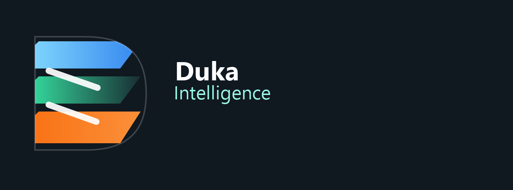
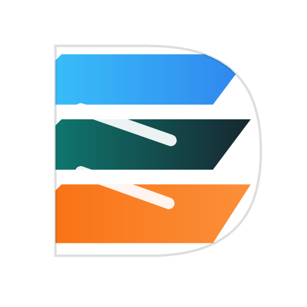
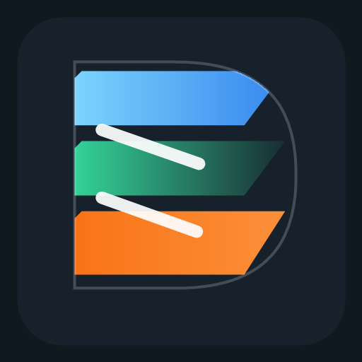
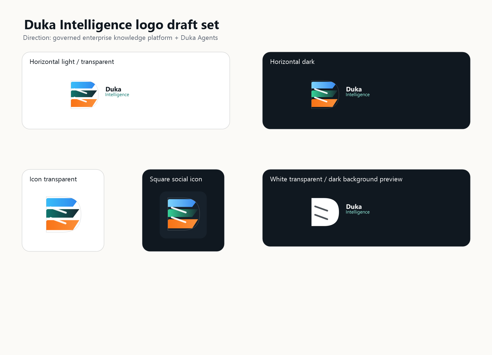

Horizontal light
For light website sections and documents.
Draft direction: governed enterprise knowledge platform plus Duka Agents. These are review assets only and have not been wired into the website.
For light website sections and documents.
For dark navbar, hero, and presentation backgrounds.

Transparent icon mark for compact use.

For LinkedIn and social avatars.

Transparent white version previewed on dark background.
One-page overview of all generated variants.
